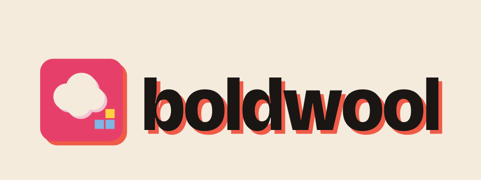
×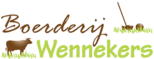
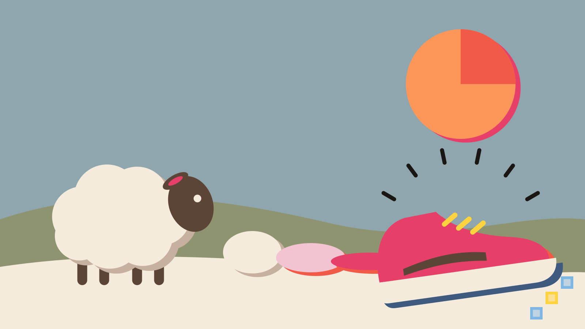
Workshop · zondag 7 februari 2027
Eén dag op de boerderij: van het scheren van het schaap tot een stuk vilt in je handen. En daarna: hoe je met wol een extra inkomstenbron en samenwerking opbouwt.
Wol wordt vaak weggegooid, terwijl het een prachtige grondstof is. Boldwool laat zien dat het anders kan: van vette ruwe wol tot eindproduct in 4 uur. Op deze dag doorloop je de hele keten zelf, op een boerderij waar de schapen biologisch worden gehouden en niet worden gedipt.
Fibre FidelityEerlijke waardeverdelingOpschalen door repliceren
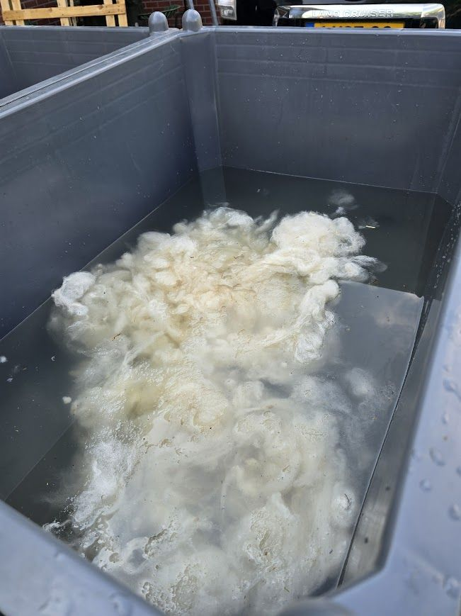
Alle tijden zijn voorlopig
Kennismaken op de boerderij.
Frank Wennekers scheert een schaap en vertelt erover. Hij heeft meer dan 50 jaar ervaring.
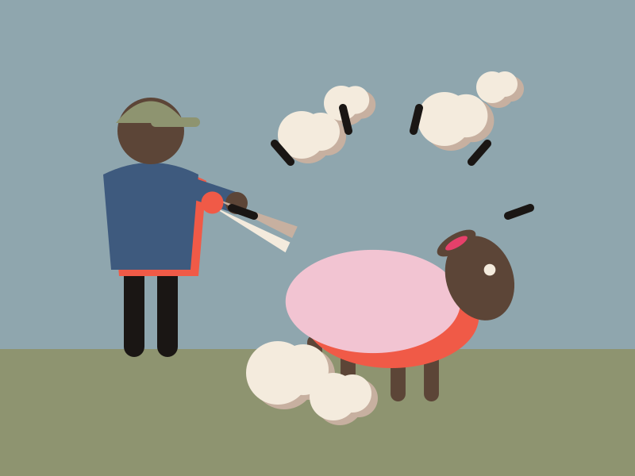
Welke wol is geschikt voor vilt, en welke gaat de grond in?
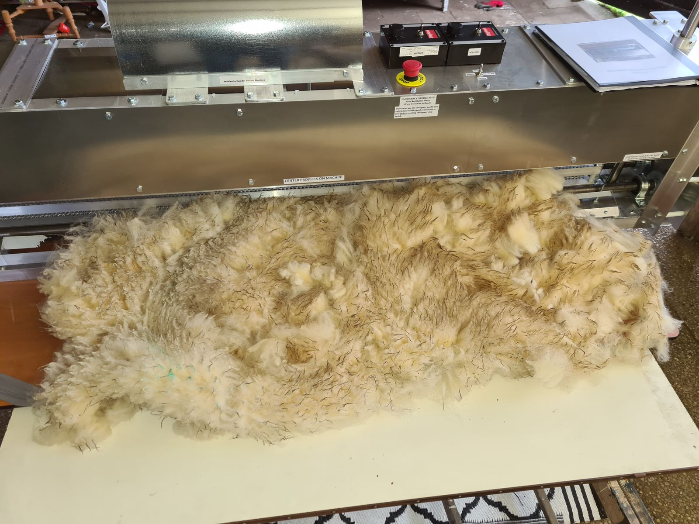
Bezoek aan de weide waar wol is ingebracht, plus een demonstratie van de wolversnipperaar met de precieze instellingen.
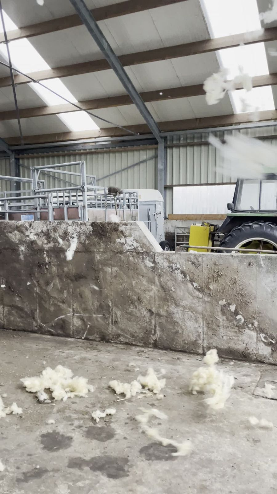
[details lunch volgen]
De juiste temperatuur, de enzymsamenstelling en de juiste leverancier.
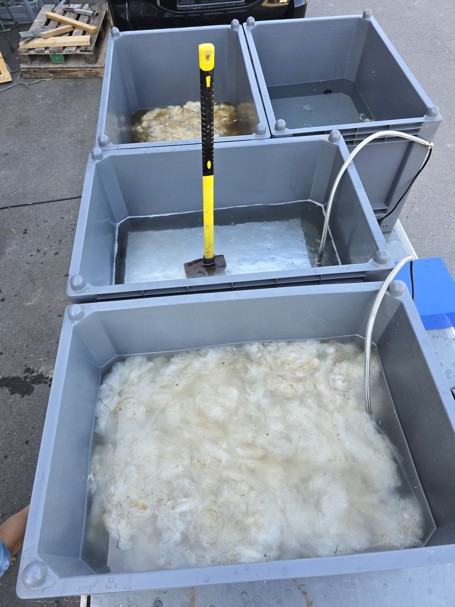
Van natte wol naar een luchtig vlies.
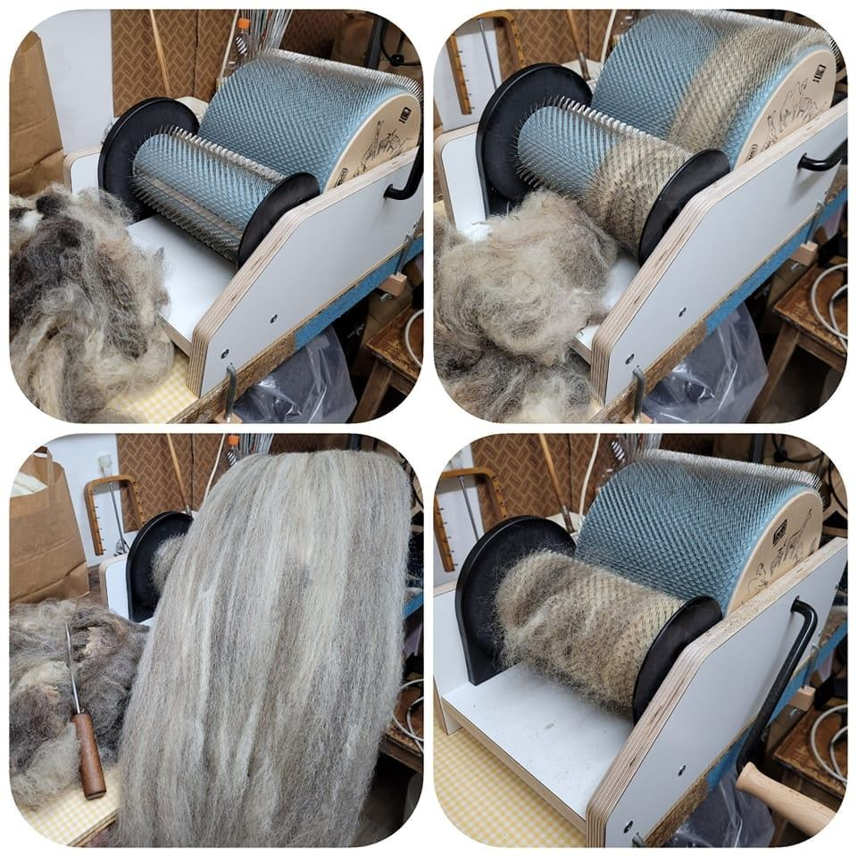
Je ziet hoe de machine van vlies vilt maakt.
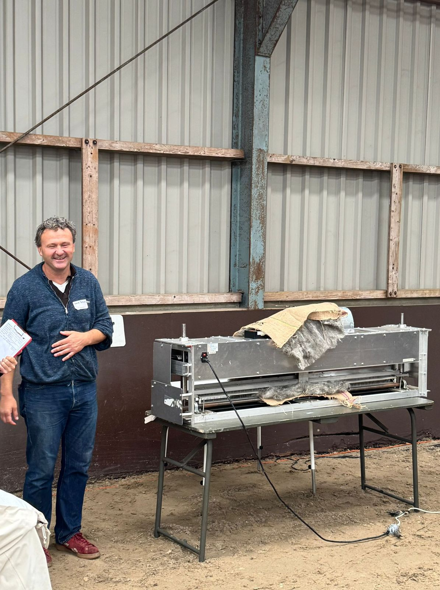
Van vilt naar producten zoals de sneaker, en hoe je dit opschaalt.
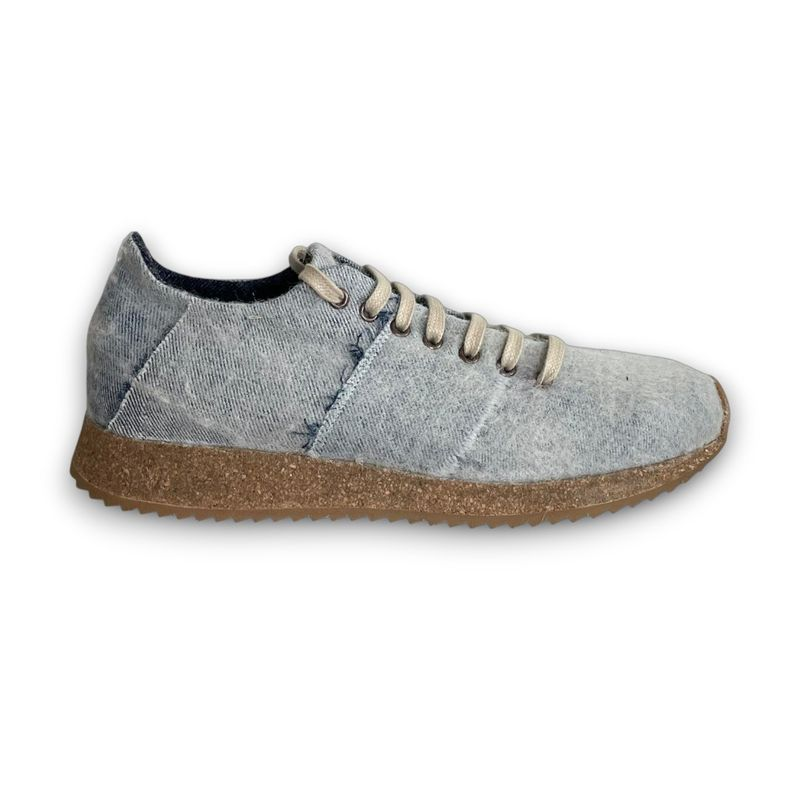
Hoe wol een extra geldstroom wordt, en hoe je samenwerkt in een coöperatie.
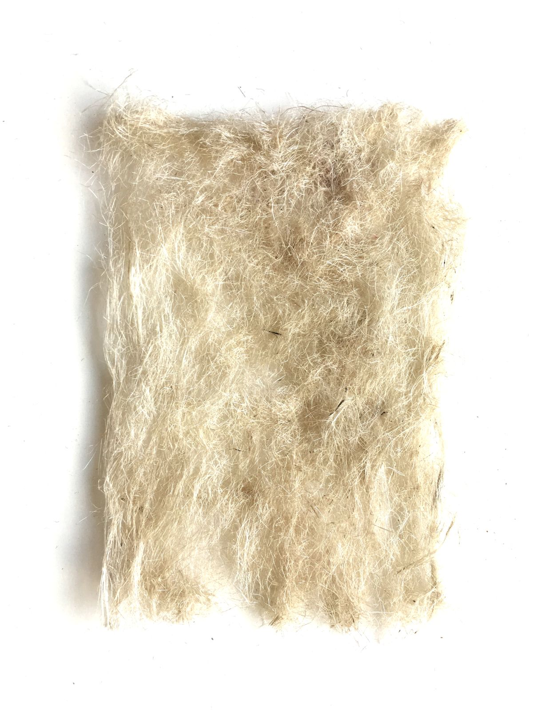
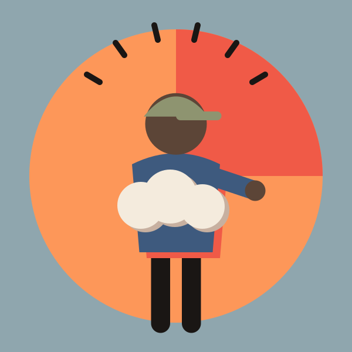
Boerderij Wennekers. Al meer dan 50 jaar ervaring met schapen scheren.
Boldwool. Wolvilter en upcycler, met een team van AI-bots op de achtergrond.